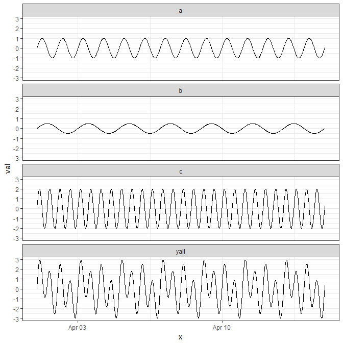
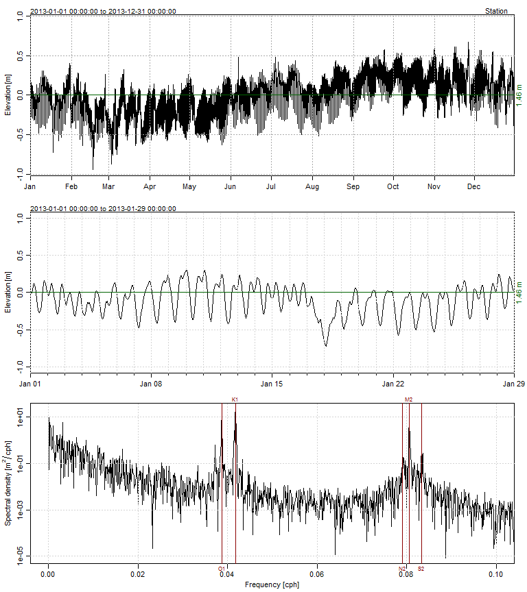
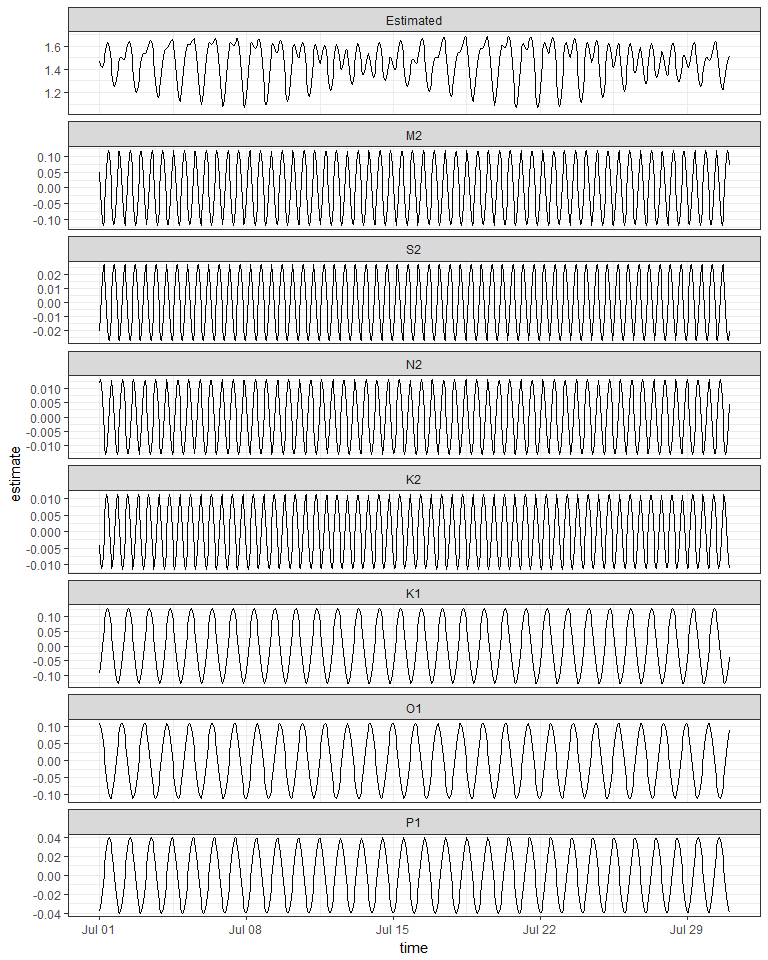
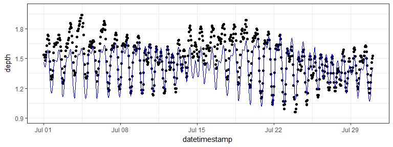
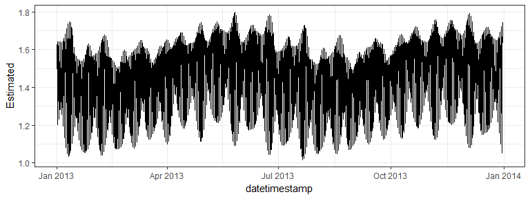

Skip to TL/DR….
Water movement in estuaries is affected by many processes acting across space and time. Tidal exchange with the ocean is an important hydrodynamic process that can define several characteristics of an estuary. Physical flushing rates and water circulation are often controlled by tidal advection, whereas chemical and biological components are affected by the flux of dissolved or particulate components with changes in the tide. As such, describing patterns of tidal variation is a common objective of coastal researchers and environmental managers.
Tidal predictions are nothing new. A clever analog approach has been around since the late 1800s. The tide-predicting machine represents the tide as the summation of waves with different periods and amplitudes. Think of a continuous line plot where the repeating pattern is linked to a rotating circle, Representing the line in two-dimensions from the rotating circle creates a sine wave with the amplitude equal to the radius of the circle. A more complex plot can be created by adding the output of two or more rotating disks, where each disk varies in radius and rate of rotation. The tide-predicting machine is nothing more than a set of rotating disks linked to a single graph as the sum of the rotations from all disks. Here’s a fantastic digital representation of the tide-predicting machine:
Tides are caused primarily by the gravitational pull of the sun and moon on the earth’s surface. The elliptical orbits of both the moon around the earth and the earth around the sun produce periodic but unequal forces that influence water movement. These forces combined with local surface topography and large-scale circulation patterns from uneven heating of the earth’s surface lead to the variation of tidal patterns across the globe. Although complex, these periodic patterns can be characterized as the summation of sine waves, where one wave represents the effect of a single physical process (e.g., diurnal pull of the moon). Describing these forces was the objecive of the earlier tide-predicting machines. Fortunately for us, modern software (i.e., R) provides us with a simpler and less expensive approach based on harmonic regression.
We’ll create and sum our own sine waves to demonstrate complexity from addition. All sine waves follow the general form y as a function of x:
\[ y = \alpha + \beta\sin\left(2\pi f x + \Phi\right) \] where the amplitude of the wave is \(\beta\) and the frequency (or 1 / period) is \(f\). The parameters \(\alpha\) and \(\Phi\) represent scalar shifts in the curve up/down and left/right, respectively. We can easily create a function in R to simulate sine waves with different characteristics. This function takes the parameters from the above equation as arguments and returns a sine wave (\(y\)) equal in length to the input time series (\(x\)). The \(\alpha\) and \(\beta\) are interpreted as units of wave height (e.g., meters) and \(f\) and $Phi$ are in hours.
# function for creating sine wave
waves <- function(time_in, alpha = 0, beta = 1, freq = 24, phi = 0){
# timestep per hour
time_step <- 60 / unique(diff(time_in))
# set phi as difference in hours from start of time_in
phi <- min(time_in) + phi * 3600
phi<- as.numeric(difftime(phi, min(time_in)))
phi <- phi / time_step
# get input values to cos func
in_vals <- seq(0, length(time_in), length = length(time_in))
in_vals <- in_vals / time_step
in_vals <- 2 * pi * in_vals * 1 / freq
# wave
y <- alpha + beta * sin(in_vals + phi)
return(y)
}The default arguments will return a sine wave with an amplitude of one meter and frequency of one wave per 24 hours. Two additional time series are created that vary these two parameters.
# input time series for two weeks, 15 minute time step
x <- as.POSIXct(c('2017-04-01', '2017-04-15'))
x <- seq(x[1], x[2], by = 60 * 15)
# get three sine waves
# a: default
# b: amplitude 0.5, 48 hour period
# c: amplitude 2, 12 hour period
a <- waves(x)
b <- waves(x, beta = 0.5, f = 48)
c <- waves(x, beta = 2, f = 12)We can combine all three waves in the same data object, take the summation, and plot to see how it looks.
# for data munging and plotting
library(tidyverse)
# get sum of all y values, combine to single object
yall <- rowSums(cbind(a, b, c))
dat <- data.frame(x, a, b, c, yall) %>%
gather('var', 'val', -x)
# plot
ggplot(dat, aes(x = x, y = val)) +
geom_line() +
facet_wrap(~var, ncol = 1) +
theme_bw()
The important piece of information we get from the plot is that adding simple sine waves can create complex patterns. As a general rule, about 83% of the variation in tides is created by seven different harmonic components that, when combined, lead to the complex patterns we observe from monitoring data. These components are described as being of lunar or solar origin and relative periods occurring either once or twice daily. For example, the so-called ‘M2’ component is typically the dominant tidal wave caused by the moon, twice daily. The periods of tidal components are constant across locations but the relative strength (amplitudes) vary considerably.
The oce package in R has a nifty function for predicting up to 69 different tidal constituents. You’ll typically only care about the main components above but it’s useful to appreciate the variety of components included in a tidal signal. We’ll apply the tidem function from oce to predict the tidal components on a subset of SWMP data. A two-week period from the Apalachicola Bay Dry Bar station is used.
library(SWMPr)
library(oce)
# clean, one hour time step, subset, fill gaps
dat <- qaqc(apadbwq) %>%
setstep(timestep = 60) %>%
subset(subset = c('2013-01-01 0:0', '2013-12-31 0:0'), select = 'depth') %>%
na.approx(maxgap = 1e6)The tidem function from oce requires a ‘sealevel’ object as input. Plotting the sealevel object using the plot method from oce shows three panels; the first is the complete time series, second is the first month in the record, and third is a spectral decomposition of the tidal components as cycles per hour (cph, or period).
datsl <- as.sealevel(elevation = dat$depth, time = dat$datetimestamp)
plot(datsl)
We can create a model to estimate the components from the table above using tidem. Here, we estimate each component separately to extract predictions for each, which we then sum to estimate the complete time series.
# tidal components to estimate
constituents <- c('M2', 'S2', 'N2', 'K2', 'K1', 'O1', 'P1')
# loop through tidal components, predict each with tidem
preds <- sapply(constituents, function(x){
mod <- tidem(t = datsl, constituent = x)
pred <- predict(mod)
pred - mean(pred)
})
# combine prediction, sum, add time data
predall <- rowSums(preds) + mean(datsl[['elevation']])
preds <- data.frame(time = datsl[['time']], preds, Estimated = predall)
head(preds)## time M2 S2 N2 K2
## 1 2013-01-01 00:00:00 -0.111578526 -0.020833606 0.000215982 -0.0048417234
## 2 2013-01-01 01:00:00 -0.118544835 -0.008940681 0.006428260 -0.0093752262
## 3 2013-01-01 02:00:00 -0.095806627 0.005348532 0.011088593 -0.0113830570
## 4 2013-01-01 03:00:00 -0.049059634 0.018205248 0.013072149 -0.0103243372
## 5 2013-01-01 04:00:00 0.009986414 0.026184523 0.011900172 -0.0064842694
## 6 2013-01-01 05:00:00 0.066540974 0.027148314 0.007855534 -0.0008973087
## K1 O1 P1 Estimated
## 1 0.0911501572 0.01312209 0.0381700294 1.463683
## 2 0.0646689921 0.03909021 0.0340807303 1.465686
## 3 0.0337560517 0.06274939 0.0276811946 1.491713
## 4 0.0005294868 0.08270543 0.0194051690 1.532812
## 5 -0.0327340223 0.09778235 0.0098135843 1.574727
## 6 -0.0637552642 0.10709170 -0.0004434629 1.601819Plotting two weeks from the estimated data shows the results. Note the variation in amplitude between the components. The M2 , K1, and O1 components are the largest at this location. Also note the clear spring/neap variation in range every two weeks for the combined time series. This complex fort-nightly variation is caused simply by adding the separate sine waves.
# prep for plot
toplo <- preds %>%
gather('component', 'estimate', -time) %>%
mutate(component = factor(component, level = c('Estimated', constituents)))
# plot two weeks
ggplot(toplo, aes(x = time, y = estimate, group = component)) +
geom_line() +
scale_x_datetime(limits = as.POSIXct(c('2013-07-01', '2013-07-31'))) +
facet_wrap(~component, ncol = 1, scales = 'free_y') +
theme_bw() 
All tidal components can of course be estimated together. By default, the tidem function estimates all 69 tidal components. Looking at our components of interest shows the same estimated amplitudes in the plot above.
# estimate all components together
mod <- tidem(t = datsl)
# get components of interest
amps <- data.frame(mod@data[c('name', 'amplitude')]) %>%
filter(name %in% constituents) %>%
arrange(amplitude)
amps## name amplitude
## 1 K2 0.01091190
## 2 N2 0.01342395
## 3 S2 0.02904518
## 4 P1 0.04100388
## 5 O1 0.11142455
## 6 M2 0.12005114
## 7 K1 0.12865764And of course comparing the model predictions with the observed data is always a good idea.
# add predictions to observed data
dat$Estimated <- predict(mod)
# plot one month
ggplot(dat, aes(x = datetimestamp, y = depth)) +
geom_point() +
geom_line(aes(y = Estimated), colour = 'blue') +
scale_x_datetime(limits = as.POSIXct(c('2013-07-01', '2013-07-31'))) +
scale_y_continuous(limits = c(0.9, 2)) +
theme_bw() 
The fit is not perfect but this could be from several reasons, none of which are directly related to the method - instrument drift, fouling, water movement from non-tidal sources, etc. The real value of the model is we can use it to fill missing observations in tidal time series or to predict future observations. We also get reasonable estimates of the main tidal components, i.e., which physical forces are really driving the tide and how large are the contributions. For example, our data from Apalachicola Bay showed that the tide is driven primarily by the M2, K1, and O1 components, where each had relative amplitudes of about 0.1 meter. This is consistent with general patterns of micro-tidal systems in the Gulf of Mexico. Comparing tidal components in other geographic locations would produce very differents results, both in the estimated amplitudes and the dominant components.
Here’s how to estimate the tide from an observed time series. The data are from SWMPr and the tidem model is from oce.
library(SWMPr)
library(oce)
# clean input data, one hour time step, subset, fill gaps
dat <- qaqc(apadbwq) %>%
setstep(timestep = 60) %>%
subset(., subset = c('2013-01-01 0:0', '2013-12-31 0:0'), select = 'depth') %>%
na.approx(maxgap = 1e6)
# get model
datsl <- as.sealevel(elevation = dat$depth, time = dat$datetimestamp)
mod <- tidem(t = datsl)
# add predictions to observed data
dat$Estimated <- predict(mod)
# plot
ggplot(dat, aes(x = datetimestamp, y = Estimated)) +
geom_line() +
theme_bw() 